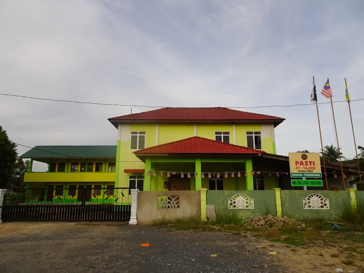
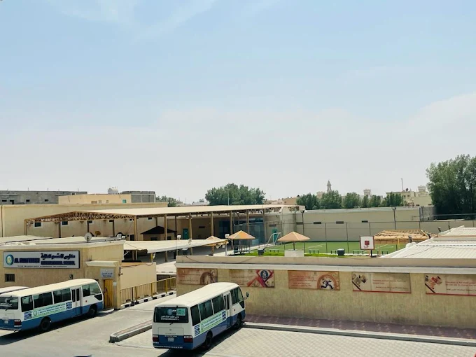
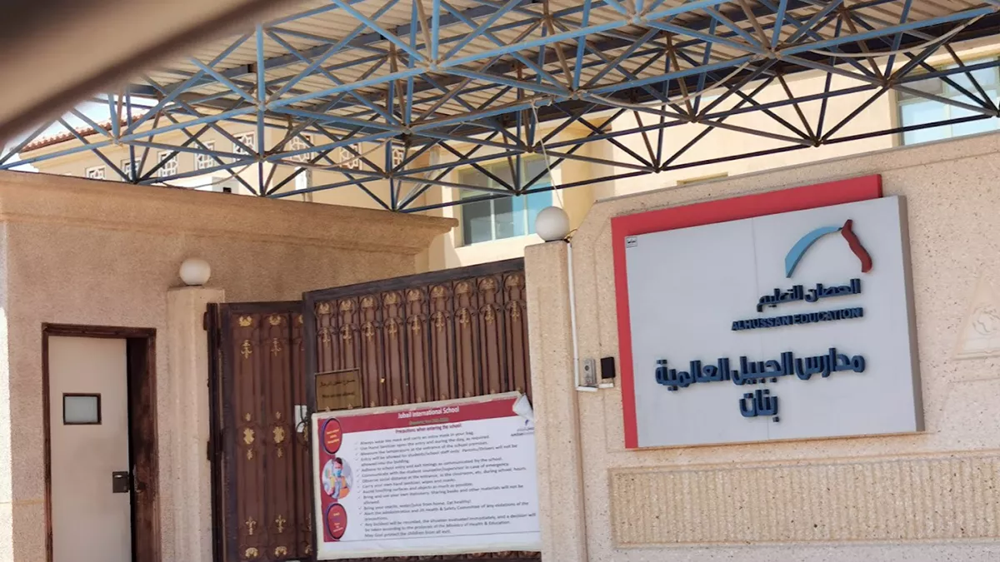
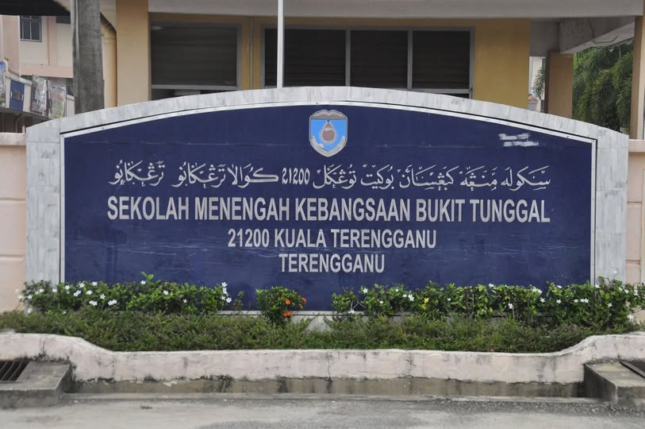
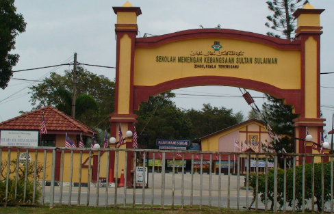

My Education Journey
PASTI At-Tajdid (4 to 6 years old)

This was my very first kindergarten, located near my house. I still remember crying a lot on my first days because I hated going to school, but over time I adjusted and started to enjoy it. This was where I began to learn basic reading, writing, and social skills.
Sekolah Kebangsaan Seri Paka (7 to 11 years old)

My primary school years were filled with cherished memories. This school, also close to home, gave me many opportunities to grow. I actively joined sports, bicara berirama, and various co-curricular activities. I made many close friends here and learned how much I enjoyed being part of school events.
Al-Moattasem International School (11 to 13 years old)

Moving to a new country, I experienced international school for the first time. It was a girls-only school, and I really liked the neat and formal school uniform. I also experienced taking the school van for the first time, which was new and exciting for me.
Al-Hussan International School Jubail (13 to 15 years old)

This was a larger international school with a welcoming and supportive environment. It was quite far from home, so I had to take the school bus for the first time. The bus driver didn’t speak much English, which made communication a bit challenging at first, but he was always kind and helpful. During my time there, I joined the basketball and badminton teams and was honored to receive the Student of the Month award.
Sekolah Kebangsaan Bukit Tunggal (15 years old)

I returned to Malaysia to prepare for my PT3 examination and joined this school. Although the transition back to the local education system was a challenge, I was able to adapt quickly and continued to focus on my studies.
Sekolah Menengah Kebangsaan Sultan Sulaiman (16 to 17 years old)

This was my final secondary school before university. It is a prestigious cluster school located near the beach. I stayed in the dormitory for the first time, which helped me grow more independent. I also continued playing basketball and made many great memories during my senior years.
UiTM Machang (19 to 21 years old)

Currently, I am pursuing my Diploma in Information Management and am in my final semester. Studying at UiTM Machang has been a meaningful journey where I’ve grown both academically and personally.